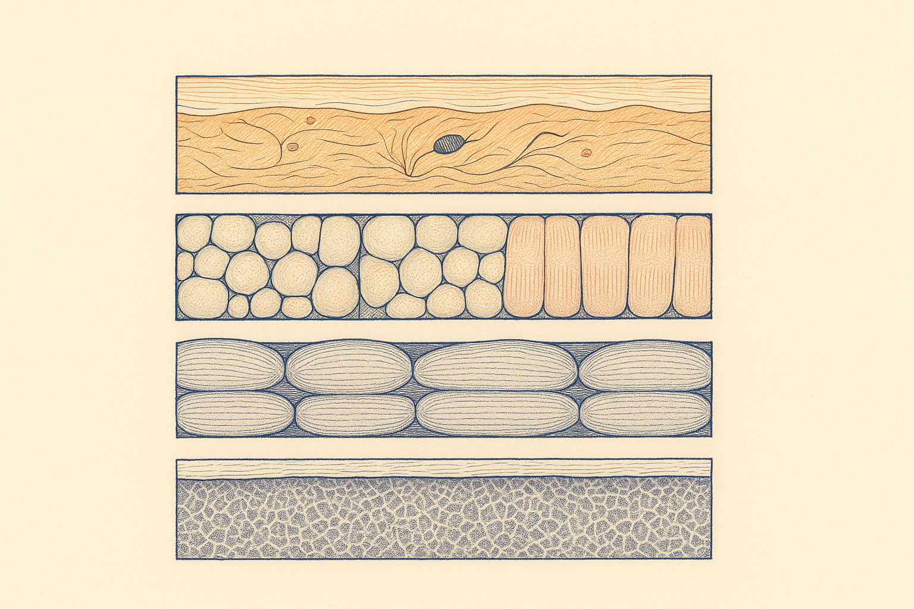
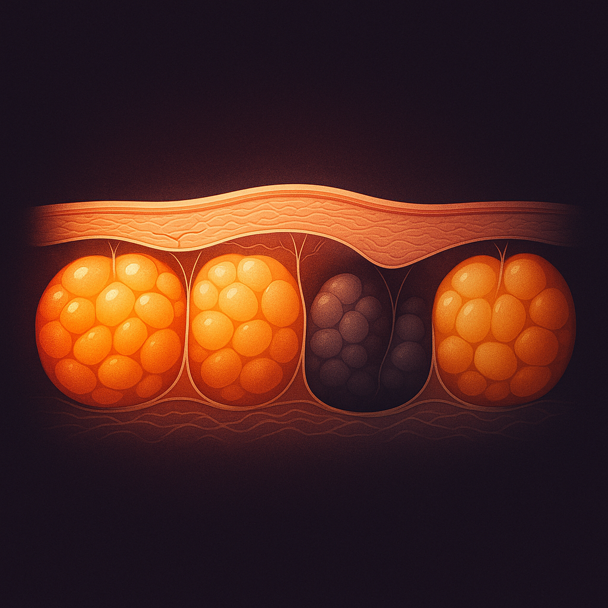
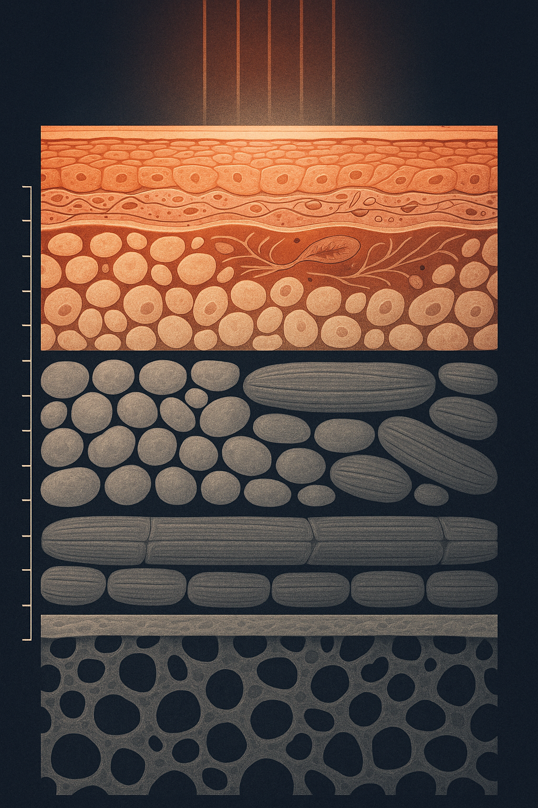

Review below. Reply approve to publish the Facebook post, or tell me edits.

Most of what people call ageing skin is not happening in the skin.
Here is the moment that usually proves it. Your skin can be in genuinely good condition, even tone, decent texture, cared for consistently, and the face in a recent photo still looks different from the face in an older one. That gap is confusing if you believe the mirror is showing you skin. It stops being confusing the moment you learn that three of the four things you are looking at are not skin at all.
A face is built in four layers. From the surface down: skin, then fat, then muscle with its retaining ligaments, then bone. Each layer changes across adult life on its own schedule, and only one of them is the layer your skincare shelf addresses.
Think of a tent. Bone is the poles. The retaining ligaments are the guy ropes, anchoring everything at fixed points. Fat is the padding that gives the structure its soft, full shape. Skin is the canvas stretched over the top. You can re-proof that canvas, clean it, and care for it beautifully for years. It will not straighten a bent pole.
Most skincare frustration comes from asking the canvas to do a pole's job.
CT imaging studies of the facial skeleton report that it changes shape across adult life: the eye socket opening widens, and the midface and jawline lose some projection (Kahn and Shaw, Aesthetic Surgery Journal, 2008, on the ageing bony orbit; Shaw and Kahn, Plastic and Reconstructive Surgery, 2007, on the midface bony elements).
Read that again, because it quietly rewrites a lot of mirror moments. The frame itself is not fixed. When the frame changes, everything resting on it drapes differently, even if the surface is in excellent condition. Slightly deeper-set eyes, a softer jaw edge: these often begin at the deepest layer, not the top one.
The face's fat is not one even sheet: it sits in separate compartments divided by fibrous partitions, and those compartments deflate and shift at different rates. That mapping comes from Rohrich and Pessa's anatomical study of the facial fat compartments (Plastic and Reconstructive Surgery, 2007), which is why hollows and folds tend to appear along the boundaries between compartments rather than randomly.
This is the layer behind most of what people describe as "sagging" or "losing volume". A fold at a predictable spot, a hollow that seems to arrive in one place while the cheek beside it stays full: that is compartment geometry doing what compartment geometry does. It is not a failure of your moisturiser.
Retaining ligaments tether the surface to deeper structures at fixed points, like the stitches through a quilt. Between the stitches the filling can shift and settle; at the stitch itself, nothing moves. As that support loosens with time, tissue settles differently on either side of a tether, and the quilt starts to show where it is pinned. That is why certain lines and folds show up in the same places on almost everyone: the anchoring points are shared anatomy, not personal neglect.
The skin itself does change too: it gradually thins and renews more slowly, and we have covered that in detail in our piece on photoageing versus chronological ageing.
The honest boundary line: skincare, sun protection and light act on the top layer. Their territory is surface quality: tone evenness, texture, and how light sits on the skin. That is a real territory, and it is worth caring for well. But it is one layer of four, and the other three do not take instructions from anything you apply.
Here is a free tool you can use on any two photos of yourself, taken years apart at roughly the same angle. It works no matter what products you own, including none.
> The three-question photo audit > > 1. Outline. Has the shape or edge changed (temples, cheeks, jawline)? That is structure, bone and fat, and nothing you apply reaches it. > 2. Shadow. Does it appear in some light and vanish in others? That is contour and lighting, not damage. Change the light and it changes. > 3. Surface. Is it the skin itself, tone, texture, the way light sits on it? That is the only layer anything in your routine works on.
Run those three questions before you spend a dollar on a fix. Most disappointment in this category comes from buying a surface product for an outline problem, or grieving a shadow that was mostly the downlight in a change room. If it is useful, send it to whoever keeps blaming their skincare.
Start with the disqualification, because it matters more than the pitch. No cream and no light device restores bone or refills a fat compartment. Anything promising lift or contour from a bottle or a mask is selling a job the biology does not support. That includes ours.
Redermis is new. We do not have a wall of reviews yet and we are not going to invent any.
What we will say is where light therapy honestly sits: in the surface column, and only there. Used consistently at home, ten minutes a day, it supports the look of tone and texture, the things your skin can actually answer for. It is a cosmetic device, not medicine. And one line we mean completely: daily sun protection slows change in that same top layer more than anything we sell.
Knowing which layer you are looking at is not depressing. It is liberating. It stops you paying for the wrong fix, and it takes the pressure off your routine to do a job it was never able to do. The poles and the padding follow their own timetable. The canvas, though, responds to decades of good care. Skin longevity is exactly that: caring well, for a long time, for the one layer that answers you.
Realistic timelines in that surface column look like glow and improved tone within 7 to 10 days, and a softened appearance of fine lines somewhere around the 4 to 8 week mark. If you want to see the device that sits there, the mask and the full spec are here.
One last thing, and we are genuinely curious. Which of the three turned out to be the real answer for you: outline, shadow or surface?

Three of the four things you are looking at in that photo are not skin.
We sell a light therapy mask, so here is the unhelpful-for-us part: light does not restore bone and it does not refill a fat compartment. Nothing you apply or shine does.
Think of an armchair. Frame, stuffing, upholstery. Your face is built the same way, in four layers:
Bone. CT imaging studies report the eye socket opening widens and the midface and jawline lose some projection across adult life (Kahn and Shaw, 2008). The frame itself shifts.
Fat. It sits in separate compartments divided by fibrous partitions, and they deflate at different rates, which is why hollows turn up along the boundaries (Rohrich and Pessa, 2007).
Ligaments. They tether the surface to deeper structure at fixed points, like the stitches through a quilt. Between the stitches, the filling settles. At the stitch, nothing moves.
Skin. The upholstery. One layer out of four.
Save this three-question photo audit for the next time the mirror bothers you:
1. Outline equals structure. Nothing you apply reaches it.
2. Shadow equals lighting. Change the light and it changes.
3. Surface equals skin. The only layer your routine works on.
New brand, still earning our reviews, not inventing any. Ten minutes a day supports the look of tone and texture on face and neck: 7 to 10 days for glow, 4 to 8 weeks for the look of fine lines. Cosmetic device, not medicine. Link in the first comment.
Tag the friend who blames every skincare product.
Which of the four did you assume was doing the ageing?
FIRST COMMENT (post this ourselves, immediately, so the link stays out of the body):
For the record, I assumed the fat compartments were skin for years. Every hollow looked like something my moisturiser had failed to do. If you want a closer look at where our mask does and does not fit, it is here: https://redermis.com.au/products/red-light-therapy-face-neck-mask
#SkinLongevity #RedLightTherapy #SkincareScience
IMAGE PROMPT: Editorial science illustration in the style of Scientific American or Quanta magazine: a single two-panel anatomical diagram of subcutaneous fat compartments sharing one continuous horizontal baseline, set as one iconic motif in deep indigo negative space. Left panel: rounded fat lobules held plump and evenly filled inside neat compartments divided by fine fibrous septa, the surface contour above them smooth and evenly lit in warm amber. Right panel: the exact same compartments deflated and settled lower, the septal boundaries drawn wider apart, the surface contour above dipping into a soft shadow trough precisely at one septal boundary, rendered in a cooler, dimmer tone. Clean vector-like linework with soft painterly chiaroscuro shading, palette of warm amber and coral against deep indigo. Both panels fully inside the frame with even margins. Strictly no text, no letters, no numerals, no labels, no arrows with captions, no faces, no people, no product, no device, no sunbursts, no halos, no rope, no cushions, no household objects, no honeycomb or hexagonal cells.

Your skin is the thinnest part of the problem.
What you see in the mirror is four layers, not one. Think of a tent.
Bone: the poles. The eye socket opening widens with age, and the midface and jaw lose projection.
Fat: the padding. It sits in separate compartments that deflate at different rates. Hollows form at the boundaries.
Muscle and ligaments: the guy ropes. They loosen at fixed anchor points, and the layers above them settle differently.
Skin: the canvas stretched over the top. A few millimetres, at most.
So before you blame your routine, run this three-question photo audit:
Outline changed? That is structure. Nothing you apply reaches it.
Only in certain light? That is a shadow. Change the light.
Tone, texture, how light sits on it? That is skin. That is the only layer your routine touches.
We make a light therapy mask and it lives in that third line only: ten minutes a day at home, supporting the look of tone and texture over weeks (glow around 7 to 10 days, fine-line appearance closer to 4 to 8 weeks). It will not restore bone, and nothing else will either. New brand, still earning our reviews, not inventing any. Cosmetic device, not medicine.
Send this to someone who keeps blaming their serum.
Link in bio if you want the full spec.
Which layer did you assume was doing the ageing? Curious what people guess.
Save this for the next time the mirror bothers you.
#skinageing #facialanatomy #skincareeducation #skincarefacts #LEDFaceMask #redlighttherapy #skincareaustralia #AtHomeSkincare
IMAGE PROMPT: Vertical 4:5 editorial science illustration in the style of Scientific American / New Scientist: a depth-of-reach anatomical plate of four continuous horizontal tissue strata stacked vertically, every band drawn as a full-width rectangle with squared edges running edge to edge inside even margins, nothing truncated or ragged. Top and thinnest band, SKIN: flattened corneocytes over nucleated epidermal strata, a basement membrane, then a dermis of woven wavy collagen bundles with one slender spindle fibroblast and one small looping capillary. Second band, FAT: rounded adipocyte clusters in clearly separate compartments divided by fine full-height fibrous septa, rendered entirely in COOL NEUTRAL GREY with no warm or orange tint anywhere, and nothing else floating in this band. Third band, MUSCLE: skeletal muscle drawn as bundled fascicles in connective sheaths with fine regular cross-striations across the fibres, explicitly not wood grain and not a smooth flat sheet, in cool neutral grey. Base band, BONE: a dense cortical shell over an open sponge-like trabecular lattice, in cool neutral grey. Along one side, a single plain vertical depth rule in bone-cream hairline with small evenly spaced ticks and absolutely no numerals or letters. From the top edge, a few ordered parallel warm amber-red rays enter the skin band, scatter and visibly extinguish inside that thin top band alone at one clean horizontal transition line where warm gives way to cool. Warm amber, coral and rose-gold appear ONLY in the top skin band and its rays; the three bands below are strictly cool neutral grey and slate, unlit and untouched by warmth. Deep navy-charcoal ground, flat structured legible diagram style, crisp edges, fine grain, generous negative space. NO isolated floating organic objects or bean shapes, NO sunburst, NO halo, NO glowing orb, NO beam cone, NO honeycomb or hexagonal pattern, NO wood grain, NO device, NO mask, NO face or profile, NO person, NO text, NO letters, NO numbers, NO logos.
**Title:** Three of the four layers in your face are not skin: what skincare and red light can actually reach
**Description:** A hollow or a sag is often structure, not skin. Your face has four layers (bone, fat, muscle and skin) and nothing you apply reaches the first three. Run the three-question audit on your before and after photos. Outline equals structure. Shadow equals lighting. Surface equals skin: the only layer skincare or 10 minutes a day of red light therapy at home can reach. No device restores bone, including ours. New brand, still earning our reviews. Save this to your skincare board.
**Hashtags:** #RedLightTherapy #LEDFaceMask #SkincareScience #SkinAnatomy #SkincareTips
Note: this pin reuses the Instagram image (no separate image is generated for Pinterest).